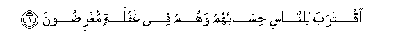
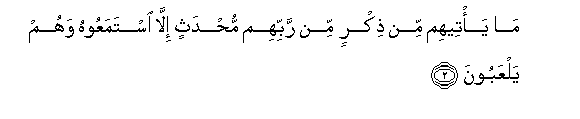
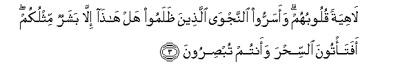

Sacred Texts Islam Index
Hypertext Qur'an Unicode Palmer Pickthall Yusuf Ali English Rodwell
Sūra XXI.: Anbiyāa, or The Prophets Index
Previous Next

The Holy Quran, tr. by Yusuf Ali, [1934], at sacred-texts.com
Sūra XXI.: Anbiyāa, or The Prophets
Section 1

1. Iqtaraba lilnnasi hisabuhum wahum fee ghaflatin muAAridoona
1. Closer and closer to mankind
Comes their Reckoning: yet they
Heed not and they turn away.

2. Ma ya/teehim min thikrin min rabbihim muhdathin illa istamaAAoohu wahum yalAAaboona
2. Never comes (aught) to them
Of a renewed Message
From their Lord, but they
Listen to it as in jest,—

3. Lahiyatan quloobuhum waasarroo alnnajwa allatheena thalamoo hal hatha illa basharun mithlukum afata/toona alssihra waantum tubsiroona
3. Their hearts toying as with
Trifles. The wrong-doers conceal
Their private counsels, (saying),
"Is this (one) more than
A man like yourselves?
Will ye go to witchcraft
With your eyes open?"
4. Qala rabbee yaAAlamu alqawla fee alssama-i waal-ardi wahuwa alssameeAAu alAAaleemu
4. Say: "My Lord
Knoweth (every) word (spoken)
In the heavens and on earth:
He is the One that heareth
And knoweth (all things)."
5. Bal qaloo adghathu ahlamin bali iftarahu bal huwa shaAAirun falya/tina bi-ayatin kama orsila al-awwaloona
5. "Nay," they say, "(these are)
Medleys of dreams!—Nay,
He forged it!—Nay,
He is (but) a poet!
Let him then bring us
A Sign like the ones
That were sent to
(Prophets) of old!"
6. Ma amanat qablahum min qaryatin ahlaknaha afahum yu/minoona
6. (As to those) before them,
Not one of the populations
Which We destroyed believed:
Will these believe?
7. Wama arsalna qablaka illa rijalan noohee ilayhim fais-aloo ahla alththikri in kuntum la taAAlamoona
7. Before thee, also, the apostles
We sent were but men,
To whom We granted inspiration:
If ye realise this not, ask
Of those who possess the Message.
8. Wama jaAAalnahum jasadan la ya/kuloona alttaAAama wama kanoo khalideena
8. Nor did We give them
Bodies that ate no food,
Nor were they exempt from death.
9. Thumma sadaqnahumu alwaAAda faanjaynahum waman nashao waahlakna almusrifeena
9. In the end We fulfilled
To them Our promise,
And We saved them
And those whom We pleased,
But We destroyed those
Who transgressed beyond bounds.
10. Laqad anzalna ilaykum kitaban feehi thikrukum afala taAAqiloona
10. We have revealed for you
(O men!) a book in which
Is a Message for you:
Will ye not then understand?